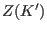

Next: Debye Waller Factor Up: Single Ion Modules Previous: Landé Factor Contents Index
For the more accurate calculation of neutron intensities it is necessary to give the magnetic form factor (see the table in appendix J) in the single ion property input file. This can easily be don by adding some additional lines to a single ion property file:
#-------------------------------------------------------------------------------------- # Neutron Magnetic Form Factor coefficients - thanks to J Brown # d = 2*pi/Q # s = 1/2/d = Q/4/pi # sin(theta) = lambda * s # r= s*s = Q*Q/16/pi/pi # # <j0(Qr)>= FFj0A*EXP(-FFj0a*r) + FFj0B*EXP(-FFj0b*r) + FFj0C*EXP(-FFj0c*r) + FFj0D # <j2(Qr)>=r*(FFj2A*EXP(-FFj2a*r) + FFj2B*EXP(-FFj2b*r) + FFj2C*EXP(-FFj2c*r) + FFj2D # <j4(Qr)>=r*(FFj4A*EXP(-FFj4a*r) + FFj4B*EXP(-FFj4b*r) + FFj4C*EXP(-FFj4c*r) + FFj4D # <j6(Qr)>=r*(FFj6A*EXP(-FFj6a*r) + FFj6B*EXP(-FFj6b*r) + FFj6C*EXP(-FFj6c*r) + FFj6D # # Dipole Approximation for Neutron Magnetic Formfactor: # -Spin Form Factor FS(Q)=<j0(Q)> # -Angular Form Factor FL(Q)=<j0(Q)>+<j2(Q)> # -Rare Earth Form Factor F(Q) =<j0(Q)>+<j2(Q)>*(2/gJ-1) #-------------------------------------------------------------------------------------- FFj0A=0.0540 FFj0a=25.0293 FFj0B=0.3101 FFj0b=12.1020 FFj0C=0.6575 FFj0c=4.7223 FFj0D=-0.0216 FFj2A=0.6751 FFj2a=18.3421 FFj2B=1.6272 FFj2b=7.2600 FFj2C=0.9644 FFj2c=2.6016 FFj2D=0.0150 FFj4A=-0.4053 FFj4a=+14.0141 FFj4B=+0.0329 FFj4b=+7.0046 FFj4C=+0.3759 FFj4c=+1.7074 FFj4D=+0.0209 FFj6A=-0.0416 FFj6a=+8.0136 FFj6B=-0.1261 FFj6b=+4.0399 FFj6C=+0.1400 FFj6c=+1.0873 FFj6D=+0.0102In order to go beyond the dipolar approximation for the magnetic formfactor in case of rare earth ions and using module so1ion the coefficients  have to be given (see appendix K for values):
#---------------------------------------------------------------------- # coefficients of Z(K') according to Lovesey (Neutron Scattering) vol.2 # chapter 11.6.1 page 233 # ... these coefficients are needed to go beyond dipolar approx. # for the neutron magnetic formfactor in rare earth ions #---------------------------------------------------------------------- Z1c0=+1.63636364 Z1c2=+2.95041322 Z3c2=-0.20896503 Z3c4=-0.25329095 Z5c4=+0.03820789 Z5c6=+0.14258681 Z7c6=-0.00614959